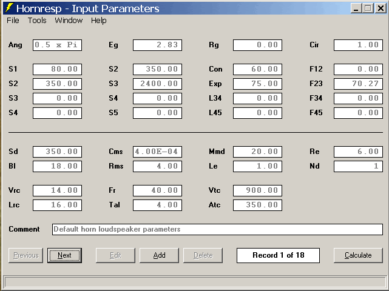
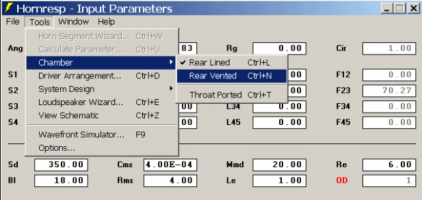
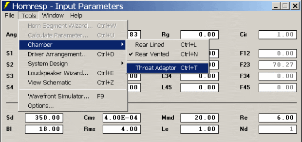

by soho54
This is the main screen.

I’m going to take some time, and go through all the functionality first, and then show a few examples of how to do sealed, vented, and some different types of horn subs. Feel free to jump ahead it you, “don’t need no stinking instructions.” It will be here to come back to if you get lost. 
First, I must point out that almost everything on this screen can be double clicked to alter it, or pull up another window to input options. Text, and input blocks alike. I won’t go into all the different ways to input things, but you will want to play with this some to see what is there.
In order to play with the settings you will need to click Add to start your first session, and then click Edit to alter anything.
Top Half________________
-
Ang is the radiation angle. This is simply the amount of nearby boundaries. It is normally referenced to a “space” parameter. Free Space (Ang=4.00) is the speaker hoisted in the air, and as such has no boundaries nearby. Half Space (Ang=2.00) is the spacer placed on one boundary such as a speaker setting on the ground in the middle of a field. This is the default setting for most all other simulators (WinISD, Unibox…) Quarter Space (Ang=1.00) has two boundaries. Say a sub sitting on the floor pushed up against a wall as well. Eighth Space (Ang=0.50) this is a corner placement, with three boundaries. Hornresp also has one more setting this is Infinite Horn (Ang=0.00) which is only useful when working with horn theory, and ideal horns.
There is a tendency for people to say, “Well, I’m putting the enclosure in a corner, so I should use 8th Space.” This is not quite right though. Unless you are building a horn with a mouth so large that it takes up the whole corner from floor to ceiling. You will get an overly optimistic FR with anything else, so it is best not to use it. If you plan on comparing the Hornresp graph to sims from other programs you will want to use Half Space (Ang=2.0)
-
Eg is the Voltage you are testing at. Most people are use to inputting/thinking in Wattage, but Wattage changes with frequency in a speaker. Voltage is a more precise method of metering the power in. You can do a fast general conversion to Watts with (Voltage*Voltage)/Re. (HR has a calculator for this. Can you double click, and find it?)
-
Rg is the extra resistance from the amplifier and the wires you are using. You can leave this at 0 for the most part, unless you are going to be using a tube amp. 0.08 is a good start for most pro amps, and 6-12ft of wire.
-
S1-S5 are possible cross sectional area inputs you may or may not use.
-
The four blocks under Rg are the length inputs for the S# sections to the left of each. They are L12, L23, L34, and L45 from top to bottom. Here the top two blocks are used. If you double click the “L12” you can activate the block. Multiple click changes the “L12” into Con, Exp, and then Par (I’ll get to these in a bit.) If you input a number into the block it will lock it in. If you click on something else without entering a distance the cell deactivates, and returns to L12. This also deactivates anything after it as well.
-
The Cir and F#s are the horn mouth area cut off frequency, and/or horn segment flare angles. They are there for your information, if you need to know such things.
Bottom Half_____________
-
Sd, Cms, Mmd, Re, Bl, Rms, and Le are the driver parameter inputs. You want to enter Sd, Re, and Le first. The other parameters Hornresp will calculate for you by double clicking the blocks, and entering the required info. I do them in order as well, so Cms, Mmd, Bl, and then Rms. You will need the common parameters Vas, Fs, Qes, and Qms to calculate them.
-
The Nd sets the programs simulation options. I’ll get to this a little later. The block next to it is the number of drivers in the system. If you double click it, a window will open up allowing you to set the number of parallel, and series drivers.
Ok, here are the last six blocks again.
Vrc is the volume of any rear chamber/space the driver is attached to.
Lrc is the length of the rear of the chamber from the driver, or the depth of the chamber.
Nd is setup with a sealed rear chamber by default, as it is here. It allows you to line the rear walls, and that is what the next two blocks are for.
Fr is the airflow resistance measurement for the lining material. It is in rayls/cm, and can be found on material data sheets online, for a variety of materials.
Tal is simply the thickness of the lining you are adding.
Vtc and Atc define a throat chamber. You can also think of it as a front chamber area. It is not sealed, but you can do a lot of things with it, with more than just horns.
Now up top in the Tools tab you can change the sealed rear chamber to something else. Let’s create a vented rear chamber.

Now we get this:
Fr & Tal are now Ap & Lpt
Ap is the cross-sectional area of the port, and Lpt is the length of the port.
Let’s try that third option out now.

Throat Adapter? What has changed?
Now we have Ap1 & Lpt. This a chamber/section in front of the throat chamber. If you have seen horns where the opening between the driver and the horn is smaller than the cones diameter that is what this is. Ap1 is the area of the opening, and Lpt is the thickness of the wood most of the time.
If you are using OD the Throat Adapter is called a Throat Port. It serves the same purpose.
Here is a graphic illustration of the Vtc/Atc - Ap1/Lpt concepts, as they pertain to horns.

Hornresp has many graphing options available after you Calculate a design.
You can find them in the Window tab up top. If you go to the Tools>Options tab will can select the first graph to pop up after you hit Calculate, if you don’t care to see the Schematic pop up every time. I use SPL Response myself.
Schematic Diagram
This shows the basic layout of the enclosure you have designed. You can move your mouse over it to display information about each enclosure section.
Acoustical Impedance
This is important for Horns, as it shows the Reactance/Resistance at the horns throat. This is another whole topic.
SPL Response
This is the good’ole FR graph most are used to seeing.
There are also other options under this Window. If you check the Tools tab with the SPL Response up you will find an Impulse, Maximum SPL, and Multiple Speakers option. Max SPL is just what it sounds like. You enter a Wattage number, and an Xmax limit, and it shows which is hit first. The Multiple Speakers option, confuses some people. It is not a multiple drivers setting, it is a multiple enclosure setting. If you want to see the SPL of four of your simed speaker enclosures this is what you would use.
The Impulse option is broken down into two more options.
Response
This is the Impulse response of the enclosure. Note that it isn’t band limited in any way. This means if you are doing a sub, there is no way to limit it to the subs bandwidth. Artifacts above the subs bandwidth will alter the IR from what the true in use IR would be.
Spectrogram
This is a different way to look at the IR. Frequency is listed from bottom to top, and time is from left to right. This view is more helpful to newbies as you can see the frequency spread, and can focus on the bandwidth area you need while ignoring the rest.
Electrical Impedance
You can alter the Ohm Range in the Tools tab if it is too large.
Diaphragm Displacement
This is the excursion graph.
Phase Response
This shows the system total phase, and the delay can be altered in the Tools tab, in time or distance.
Group Delay
This is another way to look at phase. With some enclosures you will get some large peaks here. These parallel FR peaks, and their Q. If you alter the FR peaks, the GD peaks will be changed as well. This is something to keep in mind before wigging out over it to bad.